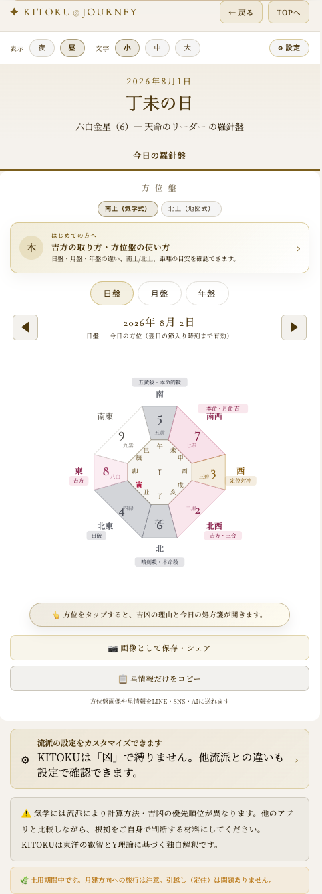
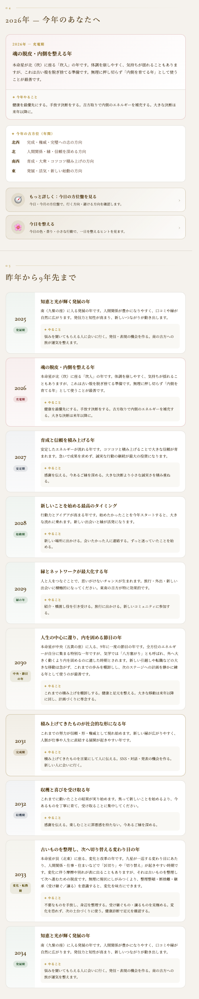
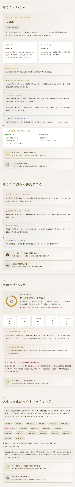
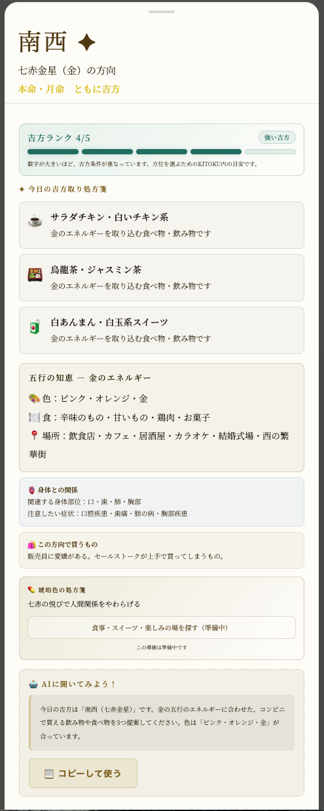
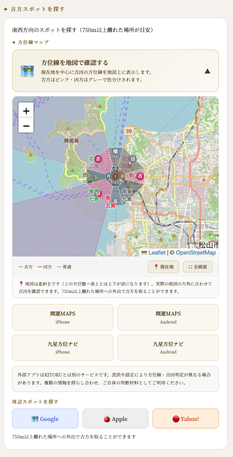

頑張っているのに
うまくいかない理由
一生懸命やっているのに、なぜか流れが重い。そんな時期があります。それは、あなたの努力が足りないからではないかもしれません。気学には「頑張っても報われにくい時期・方角」という考え方があります。知ることで、自分を責めずに済みます。
凶方を怖がるための回ではありません。「今はうまくいかない時期かも」と知って、力を抜くための回です。知ることが、一番のお守りになります。
凶方とは「避けたい方角」
気学には、動くと良い方角である吉方の反対に、避けた方が無難な方角があります。これを凶方と呼びます。ただし、凶方はあなたの行動を縛る命令ではありません。
凶方は呪いではなく、お守りのための知識です。知らずに向かうより、知って心の準備をする方が、ずっと軽く済みます。
| 凶方 | やさしい見方 |
|---|---|
| 五黄殺 | 自分の中の我が出やすい方角 |
| 暗剣殺 | 外から予期せぬ流れが来やすい方角 |
| 破壊殺 | 計画が崩れやすい方角 |
| 本命殺 | 頑張りすぎて自分をすり減らしやすい方角 |
| 的殺 | 目標が揺らぎやすい方角 |

気学には流派があり、凶の判定は流派によって違います。KITOKUは一つの見方を押し付けず、判断材料として渡します。最後にどう使うかは、いつもあなた自身が決めることです。
頑張っても報われない時がある
この回の核は、本命殺と陥入です。うまくいかない時、それは努力不足ではなく、力の入れすぎや、次の季節へ向けた準備のサインかもしれません。
頑張りすぎて自分を追い込んでいませんか。心と体を休め、自分をやさしく労わる時間を作ってください。
孤独を恐れず、内面を温め、静かに知恵を蓄える時期です。冬に花が咲かないのは、木が怠けているからではありません。春のために力を蓄えています。

自分を責めない
頑張っているのにうまくいかない。それは、あなたの努力が足りないからではありません。今は種を蒔く時期なのかもしれません。
流れが重い時ほど、自分の軸を見る
凶方や陥入の話は、あなたを不安にするためではありません。むしろ、なぜ今つらいのかを外に置き、自分の軸を取り戻すために使います。
表に出にくい部分、眠っている才能、知っておくこと。自分の星を確認すると、流れが重い時にも「自分には何が残っているか」が見えてきます。
時期が重いことと、あなた自身に価値がないことは別です。気学は、起きている流れと自分自身を分けて見るための道具でもあります。

どうしても凶方へ向かう時
仕事や家庭の事情で、凶方を避けられないこともあります。その時に必要なのは、怖がることではなく、心構えです。アプリでは「琥珀色の処方箋」として表示します。
| 凶方 | 心構え |
|---|---|
| 五黄殺 | 明るい笑顔で。相手の要望を先に聞き、自分の主張を固持しない。 |
| 暗剣殺 | 相手を傷つけないよう注意。恩人への感謝を忘れない。 |
| 破壊殺 | 目標を見失わない。予定通りでなくても、あきらめず柔軟に対応する。 |
| 本命殺 | 無理をしない。自分の役割を自覚し、休む時間を取る。 |
| 的殺 | 予想と違っても驚かない。目的を固定しすぎない。 |

凶方は、徳を磨く砥石
笑顔でいる、相手を先に立てる、無理をしない、あきらめない。凶方の心構えは、人として当たり前の良い生き方です。
相殺の手当て - 先に吉方へ寄る
どうしても凶方向へ行く日も、慌てなくて大丈夫です。07で触れたように、先に自宅から見て吉方の場所へ立ち寄り、温かいものを飲食すると、心の準備が整います。
遠くへ行く必要はありません。朝、近くの吉方のカフェやコンビニで温かい一杯を取る。これだけでも「整えてから向かう」行動になります。
凶方を知る目的は、怖がることではありません。どうすれば少し軽くできるかを知り、準備して動くためです。

まとめ - 休んでもいい
核心
気学が一番伝えたいのは、「あなたは悪くない」ということ。うまくいかない時期を、自分を責める時間ではなく、力を抜いて種を蒔く時間に。
凶方を恐れる必要はありません。知ることは、怖がるためではなく、力を抜くため。頑張りすぎているあなたに、気学が言いたいのは一つだけです。今日は、少し休んでもいいですよ。